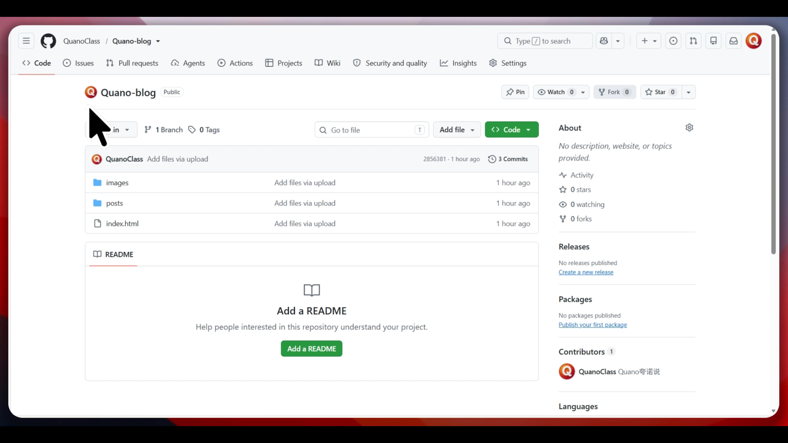

零成本架站術：手把手教你用 GitHub Pages 部署個人免費部落格網站
想要擁有一個屬於自己的個人網站或技術部落格，卻又不想花錢買網域和主機嗎？今天這篇教程要來教大家如何利用 GitHub Pages，輕鬆打造完全免費、高效且永續運作的個人靜態部落格！
一、 什麼是 GitHub Pages？

GitHub Pages 是 GitHub 提供的一項免費託管服務，允許使用者直接從 GitHub 倉庫（Repository）代管並展示靜態網頁。它非常適合用來架設個人履歷、作品集或是技術部落格。
二、快速部署你的部落格
1. 取得專案模板
你可以透過下方按鈕前往這個 GitHub 部落格模板倉庫Fork代碼

首先，找到我的部落格模板，就是圖中的Quano-blog可以直接點擊右上角的Fork（或使用 Import repository 匯入功能），將專案複製到你自己的帳號倉庫底下。沒有賬號的可以用郵箱免費注冊一個，在此就不過多闡述了
2. 開啟 GitHub Pages 功能

進入倉庫的 Settings（Settings）頁面，找到 Pages 選單。將來源（Source）設定為主分支（main），點擊儲存。
3. 修改個人化內容

進入你自己的倉庫後，把網誌的名稱、頭像以及文章內容換成你自己的。記得檢查圖片路徑和內部連結是否使用相對路徑（例如 ../），尤其是index.html中關於對應卡片的詳情頁鏈接，這樣網站上線後才不會發生跑版或找不到檔案的問題。沒問題后就點擊提交變更（commit changes）。這部分的詳細内容最好還是看影片更明白。
4. 大功告成


回到GitHub倉庫頁，刷新后等待其左上角和右下角變爲綠色對勾，説明網站更新成功。點開它，你就會發現屬於你的個人部落格已經完美上線運作囉！
三、 常見問題與配置注意事項

如果在刷新過程中遇到報錯，就重新上傳加載一遍，通常是GitHub那邊的問題。
（文章底部横版赞助广告）